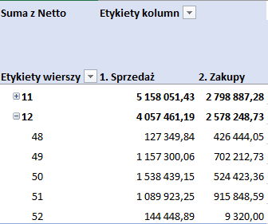

Co dzieje się w zakupach?
- Wiązki do ELB dla BEKO -> raczej nie otrzymamy wiązek w listopadzie.
- Marcopol ma brak do połowy grudnia BWKOSV2.9X9.5. Szukamy zamiennika.
- Nieprawidłowa/ zbyt twarda osłona/ opona kabli z Mrowca PRZOMY5X0.5. Obecna dostawa jest bardzo problematyczna i uszkadza nasz sprzęt do obróbki. Próbujemy dodatkowo ogrzewać przewody aby były bardziej elastyczne lecz nie przynosi oczekiwanego rezultatu. Znaleźliśmy nowego dostawcę firma KBM. Jeśli Mrowiec nie poprawi jakości będziemy zmuszeni do zmiany dostawcy.
- Śmigła do turbiny 7S - > mamy nadlewkę na śmigle. Pimet został poinformowany jednak nie ma reakcji z ich strony.
- Soft Touch 2.0 w przyszłym tygodniu otrzymamy 20 szt płytek z Nords. Musimy w tym tygodniu wybrać ofertę na lakierowanie przycisków gdyż musimy do kompletu polakierować ok 100 szt przycisków. Najprawdopodobniej wrócimy do pierwotnej oferty z Rego Wronki.
Wysłano zapytania do:
- Gemini Tech - brak odp.
- I.S.T. Sp. z o.o - oferta gotowa - 0.45/szt. Filip poprosił o cenę na przyciski lakierowanie tylko z góry. Poinformowali nas że po bokach przycisków będą zacieki i będziemy musieli sobie sami to oczyszczać podczas laserowania. Czekamy na próbki.
- MacPrint Bis - wstępna cena 0.7/szt próbki przycisków lakierowanych po całości wysłane 10/11 . Dodatkowo Filip poprosił o cenę na przyciski lakierowanie tylko z góry. Czekamy na akceptację próbek przez dz. Konstrukcyjny.
- Rego wronki - cena 0,55 zł/szt
Na przyszły rok będziemy potrzebować ok 3600 szt Soft Taouch 2.0 i o tyle spadnie zapotrzebowanie na Soft Touch 1.0. z czego ok 15% do 20 % będą stanowiły płytki poziome. o STM`ów (STM32G030K8T6) mamy 4800 szt czyli komponenty wg mnie będą zabezpieczone. - AKZONOBEL farba:
- biała klejowa -> czekamy na opracowanie
- Zaakceptowana farba RN200M cena 4,29 EUR - Jotun:
- obniżył cenę farby używanej dotychczas z 5,10 do 4,25 EUR.
Teraz wybór produkcji która farba jest dla nas lepsza Akzonobel (4,29 EUR czy Jotun (4,25 EUR).
- Mam próbniki farb pastelowych z Jotun -
Otrzymaliśmy z WM Glass bardzo korzystną ofertę na szyby. Negocjuję kwestię podpisania umowy. Poniżej porównanie Convex vs nowe ceny WM GLASS.

- Na podstawie kontroferty obniżyliśmy ceny na Nitonakrętki w Marcopolu. Nitonakrętki obniżka o 0,02. Oszczędność na 10 miesięcy o ok 6600 pln netto.
-
Płytka mocy RGB od Elmak. Potrzebujemy tylko 2 szt do okapu Santina. Tymczasem MOQ to 100 szt
- Płytka mocy RGB 100szt - 40,96 netto/szt.
- Płytka mocy RGB 200szt - 33,05 netto/szt.
Dla łatwiejszej decyzji podaję stan rzeczy pod Santinę

- Czekamy na wycenę kartonów z firmy AS kartony – na podstawie wyceny z AS kartony negocjuję z WOK
- SUKIO INDUCTION – otrzymałam certyfikaty. Przesłane do p. Kaminskiego celem akceptacji. Otrzymałam komentarz do p. Piotra i wysłałam do dostawcy prośbę o komentarz
- W ramach obniżenia cen chcemy zmienić gramatury przekładek z gramatury 455 na 425. Temat sprawdza dz. Konstrukcyjny
-
Obniżyliśmy jak na razie gramaturę dwóch przekładek (z 455g na 425g).
Indeks Nazwa P1253X430 Przekładka kartonowa FEFCO 901 P789X420 Przekładka kartonowa P789X420
Oszczędność w skali roku to 2900 netto.
Czekam na wycenę kontrofertę dla innych przekładek o gramaturze 455g. - Yuanjing Zhuoli Motor – sprawdzamy ceny u nowego potencjalnego dostawcy silników z Chin.Poniżej porównanie z Wentelonem.
- OBZPMECH2 V2 Obudowa zestawu przełączników mechanicznych 2 wersja V2 – forma jest nieszczelna.
Oto wycena:
- Forma F-776 na „OBPMV2 Obudowę płytek mocy” z wyciekiem w obszarze jednego z wypychaczy – 1 100 pln + VAT
- F-766 na „OBZPMECH” z wyciekiem z obiegu cieczy chłodzącej – 1 500 pln + VAT
- DODATKI DO TUR. 7S (10-krotna na korki i Zatyczki), likwidacja przetrysków na Zatyczkach (napawanie wypłukanego materiału matryc) – 1 450 + VAT - W listopadzie wzrośnie nam magazyn blachy o min 30 tyś z powodu wcześniejszej wysyłki blach z ArcelorMittal – zamiast w grudniu wysłali przez pomyłkę już teraz
- Poszukujemy żarówek dla BEKO – próbki z firmy NY Lighting wysłane
- Obudowy klosze i zaślepki do pasków led - > czekamy na podpisanie NDI przez firmę SMART. Jakoś opornie to idzie.
- Ceny SMARTT:
WPLED230 12,53 WPLED330 15,05 WPLED410 16,55
Poniżej jak przedstawiają się wyliczenia dla naszego najkrótszego paska (ceny z doliczonym transportem):
Sprzedaż vs zakupy

 Trzeba doprecyzować silniki - certyfikaty, waga miedzi. Skupiamy się na silniku 8030 którego cena jest najlepsza.
Trzeba doprecyzować silniki - certyfikaty, waga miedzi. Skupiamy się na silniku 8030 którego cena jest najlepsza. Proszę o wyniki FDE; EEI + Max airflow 335 na wysokim średnim i niskim biegu.
- Największe przyjęcia w 47 tygodniu.